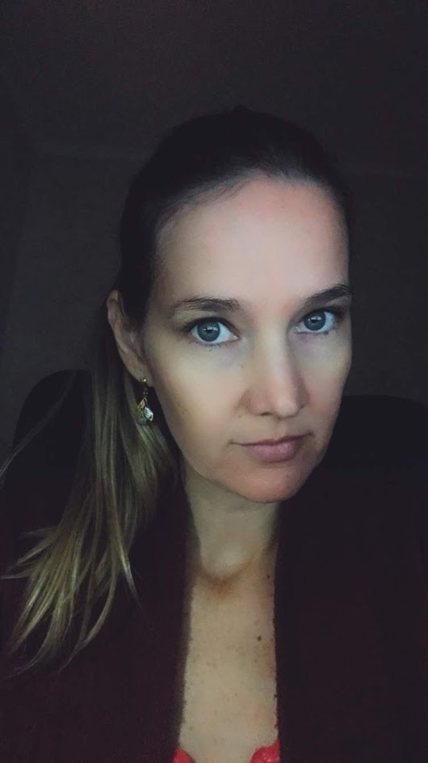

Sobre
Formada em Ciências Contábeis em 2007, atuou na área até junho de 2020. No momento está em transição de carreira, buscando novos conhecimentos na área de tecnologia.

Formada em Ciências Contábeis em 2007, atuou na área até junho de 2020. No momento está em transição de carreira, buscando novos conhecimentos na área de tecnologia.